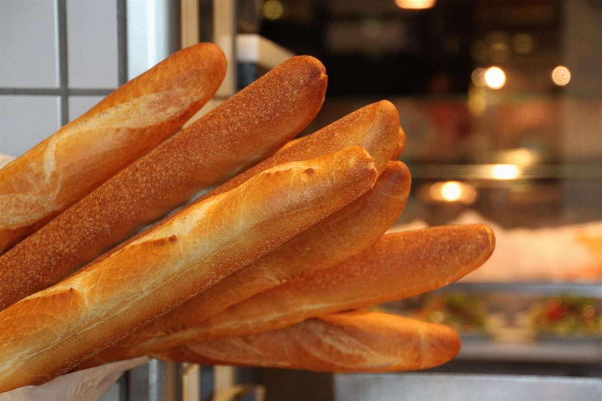

カフェ / 沖縄県宮古島市
GOODMANS
COFFEE
カフェ「GOODMANS COFFEE」のご案内ページです。営業時間やメニューなど、詳しいことは準備中。まずはInstagramをのぞいてみてください。
制作側の連想
通り抜ける機械を、配置図にしてみる
このサイトは、自動改札機を上から見た図のつもりで作りました。六つの部位に番号をふり、上の図と並べています。制作側の連想で、お店の理念・由来とは無関係です。実際の機器の仕様を示すものでもありません。
凡例
六つの部位
- 1きっぷ投入口きっぷを差し込む、横長の細いすきま。入れた先で受け入れる向きがそろう。
- 2ICタッチ部カードやスマートフォンをかざす、平らで丸みのある読み取り面。
- 3表示器通れるかどうかなどの案内を、短い言葉や記号で見せる小さな窓。
- 4フラップドア通路の両側から出入りして、人の通る道をひらいたり閉じたりする小さな扉。
- 5通過センサー通路の内側の壁に並び、人が進んでいる位置を見分ける小さな目。
- 6進入表示灯通路の入口側にある矢印や×印のランプ。進めるかどうかを光の色で伝える。
写真帯(イメージ)
コーヒーとパンの写真




写真はフリー素材のイメージです。お店のものではなく、お店で提供している商品を示すものでもありません。
写真帯(イメージ)
パンとコーヒー豆の写真


写真はパンとコーヒー豆のイメージです。お店のものではありません。
ご案内
お店のこと(確認できたものだけ)
| 所在地 | 〒906-0013 沖縄県宮古島市平良下里３９３−１ |
|---|---|
| 電話 | 準備中 |
| 営業時間 | 準備中 |
| 定休日 | 準備中 |
| ご予約 | 準備中 |
| 駐車場 | 準備中 |
| SNS | Instagram @goodmanscoffee |